뉴스레터KELI 소식을
KELI 소식을
이메일로 받아 보세요.
새 서비스, 행사, 보도자료를 발행호마다 정리해 보냅니다.
언제든 해지할 수 있습니다.
보도자료
19건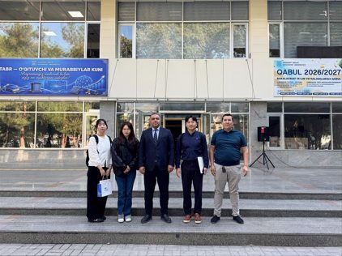
보도자료 · 한림대학교 · 일반한림대 KELI 사무국, 우즈베키스탄 타슈켄트 국립경제대학교에 ‘한림 AI 교육 서비스’ 소개
한림대 KELI 사무국, 우즈베키스탄 타슈켄트 국립경제대학교에 한림 AI 교육 서비스 소개- HAI Ecosystems 19종 시연, 한국어 보안 코딩 AI 코스2026.10.28
 언론 보도 · 한국대학신문 · 박인규 기자
언론 보도 · 한국대학신문 · 박인규 기자한림대, TSUE에 AI 서비스·KELI 플랫폼 소개...“MOU 체결·공동연구 논의”
한림대학교(총장 최양희) AI교육혁신원 KELI 사무국이 지난 22일 우즈베키스탄 타슈켄트 국립경제대를 방문해 한림대가 개발한 AI 교육 서비스 HAI Ecosy2026.10.28
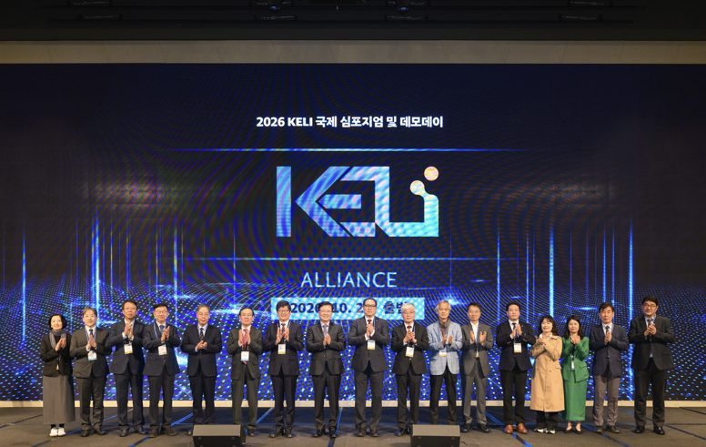
보도자료 · 한림대학교 · 행사한림대학교, ‘켈리 얼라이언스(KELI Alliance)’ 공식 출범…AI 교육 공동 활용 본격화
한림대학교, 켈리 얼라이언스(KELI Alliance) 공식 출범 AI 교육 공동 활용 본격화- 20일(화) 서울드래곤시티에서 2026 KELI 국제 심포지엄 및2026.10.20
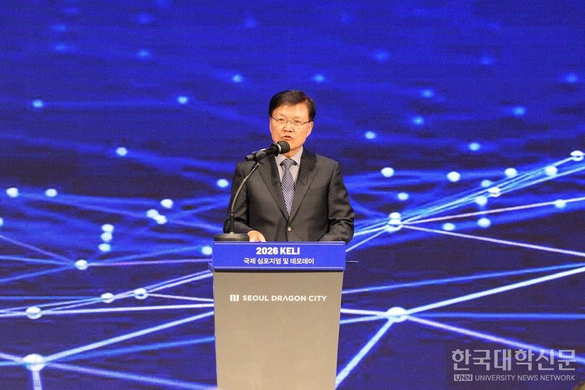
언론 보도 · 한국대학신문 · 김연주 기자한림대, ‘켈리 얼라이언스’ 공식 출범…AI 교육 공동 활용 본격화
한림대학교(총장 최양희)가 20일 서울 용산 서울드래곤시티 그랜드볼룸에서 ‘2026 KELI 국제 심포지엄 및 데모데이’를 성황리에 개최하고 ‘켈리 얼라이언스(K2026.10.20
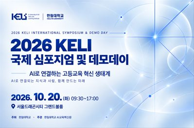
보도자료 · 한림대학교 · 행사한림대, 대학 AI 교육 ‘각자 개발’ 넘어 ‘함께 활용’으로…20일 ‘2026 KELI 국제 심포지엄 및 데모데이’ 개최
한림대, 대학 AI 교육 각자 개발 넘어 함께 활용 으로 20일 2026 KELI 국제 심포지엄 및 데모데이 개최- 대학 기업 연구기관 참여 KELI Allian2026.10.14
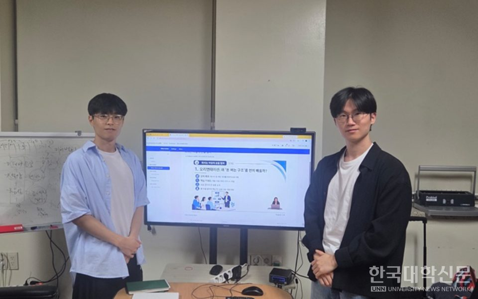
언론 보도 · 한국대학신문 · 박인규 기자한림대 운영체제연구실 학생들 ‘AI 교수 라이트’ 개발, 오픈소스로 공개
한림대학교(총장 최양희) 운영체제연구실(지도교수 고영웅) 소속 학생 정준석, 최원영씨가 인공지능(AI)을 활용해 강의 콘텐츠를 제작하고 학습관리시스템(LMS)과 2026.10.07
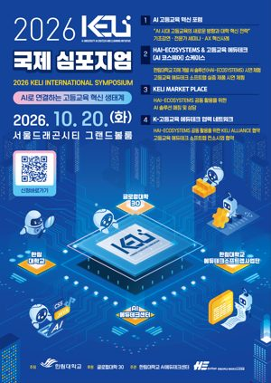
보도자료 · 한림대학교 · 일반한림대학교, ‘2026 KELI 국제 심포지엄’ 개최
한림대학교, 2026 KELI 국제 심포지엄 개최- AI로 연결하는 고등교육 혁신 생태계 대학 기업 기관이 함께하는 AI 교육혁신의 장- HAI-ECOSYSTEM2026.09.23
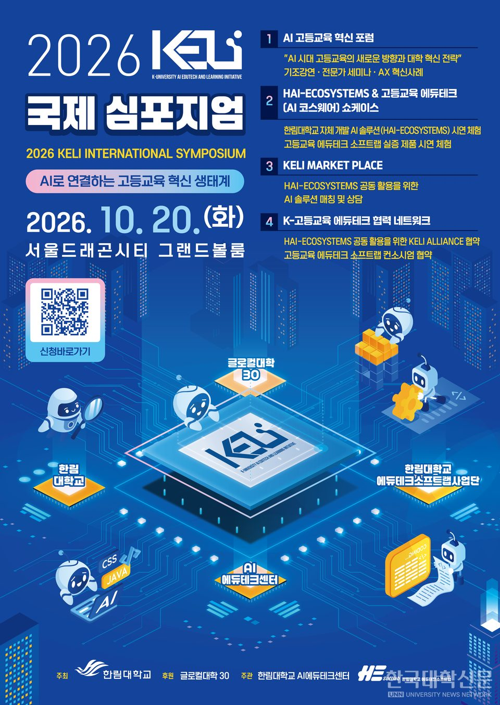
언론 보도 · 한국대학신문 · 박인규 기자한림대, ‘2026 KELI 국제 심포지엄’ 개최
한림대학교(총장 최양희)가‘AI로 연결하는 고등교육 혁신 생태계’를 주제로 한림대가 추진해 온 AI 기반 고등교육 혁신 성과를 공유하고 국내외 대학·기업·기관과 2026.09.23
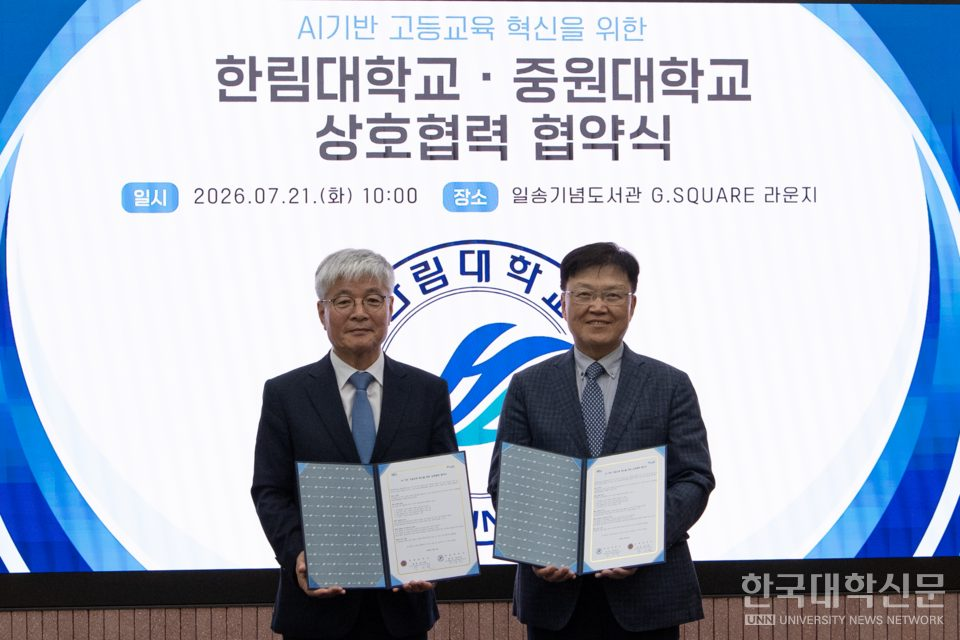
언론 보도 · 한국대학신문 · 김연주 기자한림대 – 중원대, AI 기반 고등교육 혁신을 위한 상호협력 협약 체결
한림대학교(총장 최양희)가 중원대학교(총장 장기원)와 21일 학내 일송기념도서관 G.Lounge에서 AI 기반 고등교육 혁신을 위한 상호협력 협약식을 개최했다.이2026.07.22
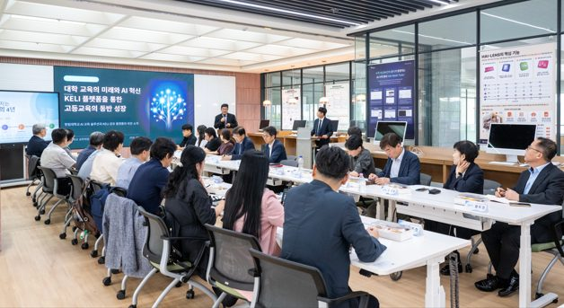
보도자료 · 한림대학교 · 일반한림대학교 「KELI Connect: 국내 대학 초청 플랫폼 데모 및 교류회」 성황리 개최
한림대학교 「KELI Connect: 국내 대학 초청 플랫폼 데모 및 교류회」 성황리 개최 사진: 「KELI Connect: 국내 대학 초청 플랫폼 데모 및 교류2026.07.07
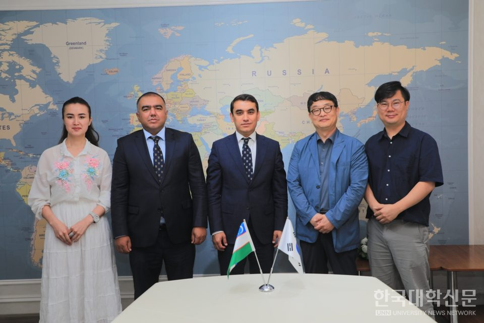
언론 보도 · 한국대학신문 · 주지영 기자한림대, 타슈켄트 국립경제대와 AI 고등교육 국제협력 논의
한림대학교(총장 최양희)가 우즈베키스탄 현지 대학과 학생교류, 교육 플랫폼 공동 활용 등을 중심으로 국제협력 방안을 논의했다고 23일 밝혔다.
한림대는 지난 192026.06.23
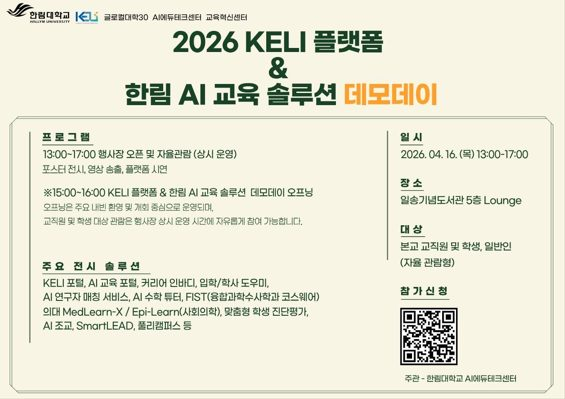
보도자료 · 한림대학교 · 행사한림대학교, ‘KELI 플랫폼 & 한림 AI 교육 솔루션 데모데이’ 오는 16일(목) 개최
한림대학교, KELI 플랫폼 한림 AI 교육 솔루션 데모데이 오는 16일(목) 개최- 글로컬대학 사업 핵심 성과인 KELI 플랫폼 및 주요 AI 교육 솔루션 공개2026.04.15
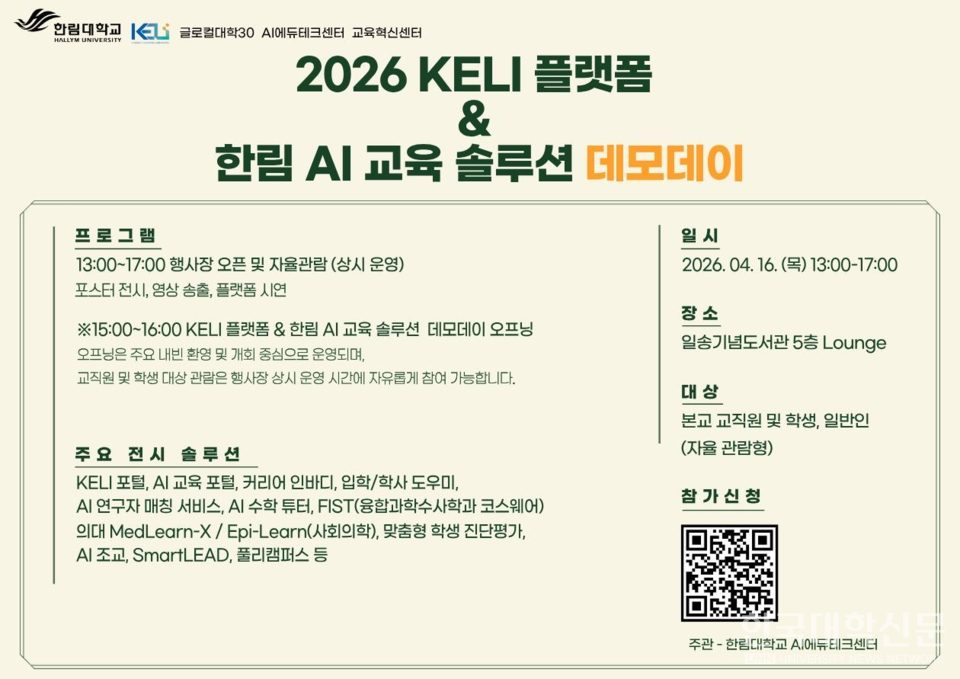
언론 보도 · 한국대학신문 · 박인규 기자한림대, AI 교육 솔루션·플랫폼 성과 공개한다
한림대학교(총장 최양희)가 AI 기반 교육 혁신 성과를 공유하는 자리를 마련하고 대학 교육 전반에 적용된 AI 솔루션을 공개한다.
학습 지원과 교수학습, 교육행정2026.04.15
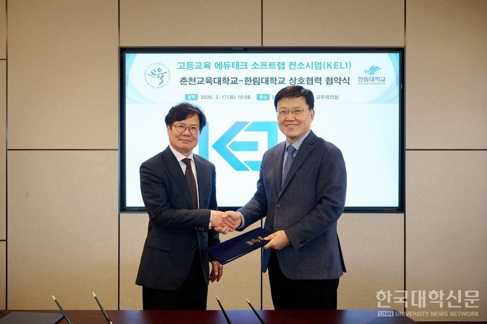
언론 보도 · 한국대학신문 · 김윤미 기자한림대-춘천교대, AI 기반 고등교육 혁신 위한 ‘에듀테크 거점’ 구축 합의
대학 교육 현장에 인공지능(AI)과 첨단 기술을 적극적으로 도입하기 위한 지자체 거점 국립대와 사립대 간의 벽을 허문 협력이 시작된다.
한림대학교(총장 최양희)와2026.03.18보도자료 · 한림대학교 · 일반
한림대학교, 제23회 대한민국 교육박람회 행사 ‘KELI 기반 AI 고등교육 에듀테크 성과 공개’
한림대학교, 제23회 대한민국 교육박람회 행사 KELI 기반 AI 고등교육 에듀테크 성과 공개 사진: 제23회 대한민국 교육박람회 내 한림대학교 부스 한림대학교(2026.01.23
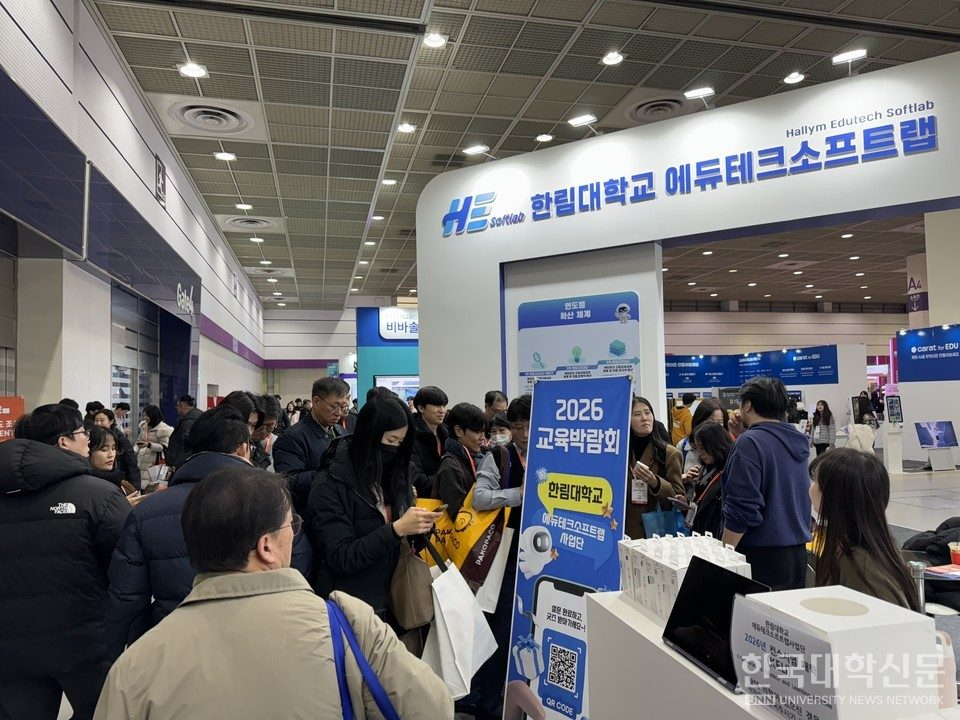
언론 보도 · 한국대학신문 · 박인규 기자한림대, 대한민국 교육박람회에서 ‘KELI 기반 AI 고등교육 에듀테크’ 성과 공개
한림대학교(총장 최양희)는 21일(수)부터 23일(금)까지 서울 코엑스에서 열리는‘제23회 대한민국 교육박람회’에 KELI 기반 AI 고등교육 에듀테크 성과를 공2026.01.23
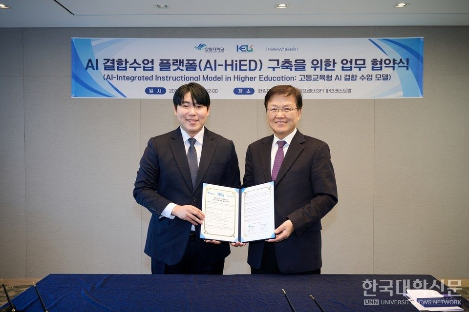
언론 보도 · 한국대학신문 · 문화춘 기자한림대–프리윌린, 맞춤형 교육 실현을 위한 ‘AI-HiED 플랫폼’ 구축 업무 협약 체결
한림대학교(총장 최양희)와 프리윌린(대표 권기성)은 8일 학내 캠퍼스라이프센터에서 고등교육형 ‘AI 결합 수업 모델(AI-HiED, Artificial Intel2025.12.09
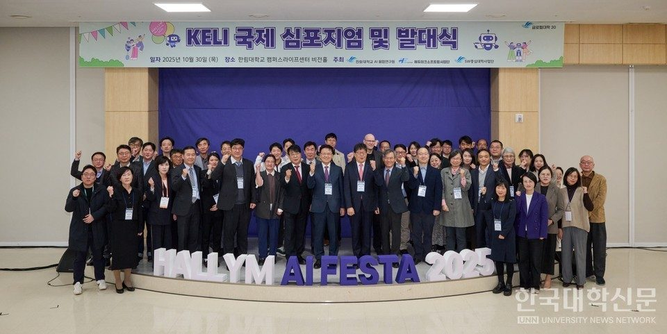
언론 보도 · 한국대학신문 · 문화춘 기자한림대, AI 교육혁신 연합체 ‘KELI’ 출범…‘AI 캠퍼스 연합’ 비전 제시
한림대학교(총장 최양희)는 30일 교내 캠퍼스라이프센터에서 ‘KELI 국제 심포지엄 및 발대식’을 열고, 대학과 산업의 벽을 허물어 AI 기반 교육 혁신을 선도할2025.10.31
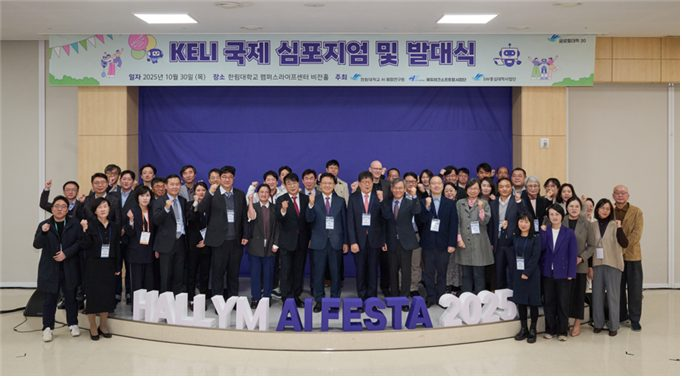
보도자료 · 한림대학교 · 행사한림대학교, AI 교육혁신 연합체 ‘KELI’ 출범… AI 교육 미래, ‘AI 캠퍼스 연합(AI Campus Alliance)’ 비전 제시
한림대학교, AI 교육혁신 연합체 KELI 출범 AI 교육 미래, AI 캠퍼스 연합(AI Campus Alliance) 비전 제시- AI 교육혁신 연합체 KELI2025.10.30
한림대학교 보도자료(hallym.ac.kr › 홍보 › 보도자료) 중 제목에 KELI 또는 켈리가 들어간 글 8건과, 한국대학신문(news.unn.net)에서 「한림대 KELI」·「한림대 켈리」로 검색한 기사 11건을 자동으로 가져옵니다.
신문 기사는 제목·요약·사진만 보여 주고 원문으로 연결합니다.
2026. 10. 29. 기준.